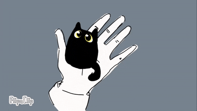

My focus is on portraying humanity through illustrating our habitual motions and body language. I love occasionally blending human realism with anime-inspired art styles while staying with either a monochrome or soft-toned color palette. I love capturing real movement through a blend of rotoscoping and cute cartoon animals. My media includes digital illustration, narrative storyboards, and visual-novel style video games.

week 2: 1920x1080
week 2: 5"x7"
week 3: Close-Up
week 3: Deep Depth of Field
week 4: Photomontage
week 5: Illustrations